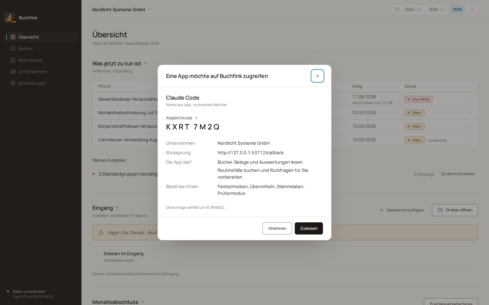

Freigabe
Was nur Sie entscheiden
Diese Schritte nimmt Buchfink nur in der App an. Versucht der Agent sie, weist Buchfink ihn ab.
- Monate und Jahre festschreiben
- Übermittlungen an das Finanzamt bestätigen
- Jahresabschluss aufstellen, feststellen und offenlegen
- Unternehmensdaten, Bankkonten und Gesellschafterdarlehen pflegen
- KI-Apps zulassen und ihnen den Zugriff entziehen

